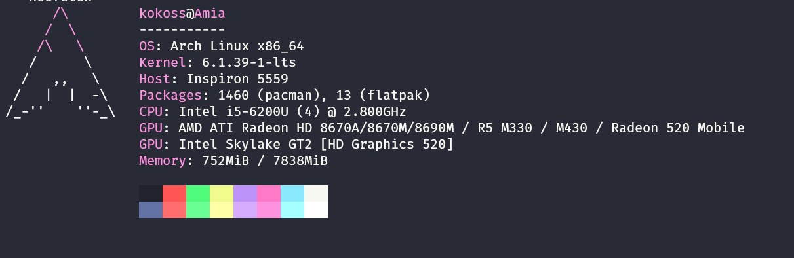
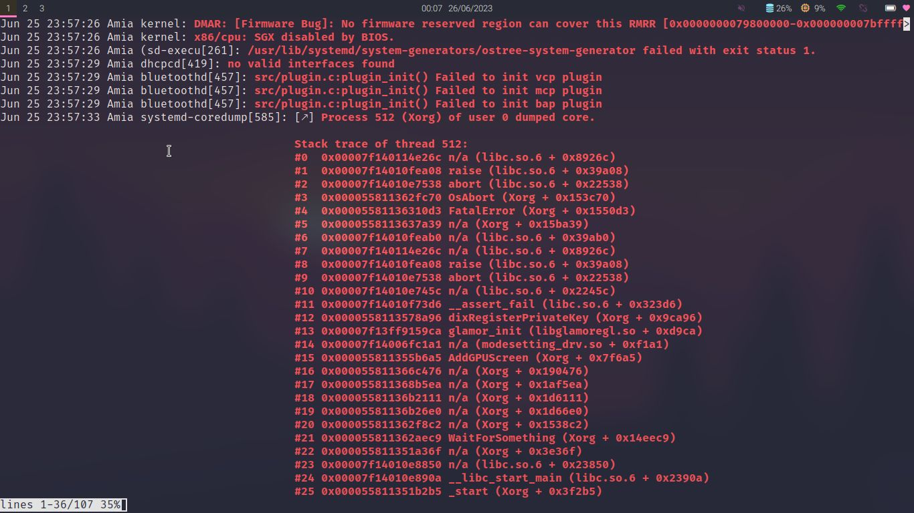

Bắt đầu sử dụng linux từ đầu 2023 nhưng những kiến thức được biết về linux từ năm 2017
Sau khi nghịch ngu xóa cả windows và bộ cài ubuntu trên ổ cứng
Sau 1 ngày thức trắng, mượn được laptop của người thân và đọc thêm tài liệu về boot on lan, tôi đã cài được ubuntu vào laptop bằng PXE và bắt đầu tập sử dụng linux
Sau 1 khoảng thời gian sử dụng với 1 đống bug không thể fix,
và việc chưa có kỹ năng sử dụng Linux trong việc học tập.
Tôi đã quá nản khi không thể fix bug kịp để thực hành nên
Ngôi cài Archlinux để tìm hiểu chuyên sau hơn nữa về linux
Bắt đầu sử dụng từ tháng 5/2023 sau khi bất lực khi ubuntu liên tục bị bug khi thực hành khiến kết quả không được tốt
Tôi quyết định sử dụng Arch Linux như một môi trường mới và ít tính năng hơn để tối ưu cho việc fix bug và học tâp
Chắc chắn nó không đơn giản xíu nào
